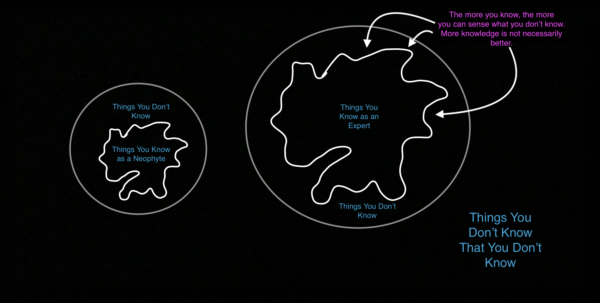

What’s the point of the human life? Perhaps the most important questions of all. A question that everyone conjectures at, yet none seem to find the
answer. And yet it seems so terse and simple. Atheists ask it, religious people ask it. Young and old, people of all colors, and gender identities.
Physicists and musicians and food service workers. All of us, deep down, ask ourselves “Why am I here?”.
But I don’t think that that’s a useful question. Asking “What is the meaning of life” is, frankly, interminable and nebulous. People have been
asking it since people have been, and no one seems to know what it even means. And to me, undefined, interminable questions are simply not useful and thus
they are a waste of time. I love complex, philosophical questions, but poor questions (of any kind) beget poor responses. It is simply difficult to answer
a bad question. On top of that, this question raises more nebulous, interminable questions simply in its asking. And some of those beg more questions. The
meaning question is what I like to call a “Hydra of Philosophical Inquiry”. What do you mean by “meaning”? Which aspects of ‘life’? Why does there have
to be a meaning at all? What other assumptions are we making in the asking of that question? Why are we even asking? To me a question that is this
problematic simply must be reinterpreted if we are to find a meaningful answer. And we must find a meaningful answer.
There are an infinite number of things to know. There are an infinite number of things that can be done. There are an infinite number of problems. There
are an infinite number of lives to live. And so naturally, the question of “what is the point of life” is a question with potentially infinite answers, and
thus it’s no longer helpful to ask it that way.
What’s especially interesting to me is the sneaky causal question we’re asking here. Given that we exist, why do we exist? Humans always, always try to
build stories for why things happen, but sometimes there is no story to be had. Sometimes things simply just are. And maybe we just are. But, that nihilistic
perspective is reductive and dismissive in my opinion, and doesn’t lead to any fulfilling, enriching conclusions. Even if we just are, we still have to figure
out how we should live. We’re back to square zero. We really do have to reframe the question here.
I think the best way to do that is to instead ask: “What should we do?”. Given that we exist, why do we exist, and, taken to the edge, what does why we
exist say about how we should live? I think that deep down that is what people who ask the “What is the point?” question mean deep down. They are asking what
should humans spend their time doing. But, a question like that is still quite flawed. This new question’s biggest flaw to me, which also happens to be a
problem with the original question, is the singularity and universality it assumes.
I don’t think that there is some grand, universalized answer to what humans should be doing. I don’t think there is one singular point to the human life.
Now maybe one could come up with some fundamental set of moral or philosophical axioms that all humans should be working to fulfill. Maybe including things
like: “try to minimize the suffering of others” or “try to understand ourselves and the universe around us”. But, the way that will actually play our in each
of our individual lives is so personalized and unique that even an axiom or set of axioms like that wouldn’t be particularly useful either. There are an
infinite number of ways to try and minimize the suffering of others. There are an infinite number of ways to understand the world. And so on and so forth. And
so we’d end up right where we started again.
I think that ultimately, eventually, every human has to, on their own, set about answering that better question of what we should be doing with the time we
have. This is one of the few questions that no one else can answer for you. The idea of a question sits upon the belief that others know things that you don’t.
The theory of mind. But this question is one of the few that no one else can know or understand or even explain for you. And so it’s not useful to ask it. You’re
on your own in this one. Figure it out yourself.
I can’t, nor can any other human being, find meaning for you. But, I can try and share how I think about finding meaning. We cannot find meaning for each
other, but maybe we can find a method to find meaning and share that with each other. The point of this essay is to try to start a conversation about our personal
ways for finding meaning. And maybe we can look at each other’s methodologies and learn something new about what is perhaps the most important question of all.
This is my personal philosophy (as of the writing this essay) on how to think about the search for meaning. I beseech you to think about and share
yours too:
Because there are so many potential meanings for your life, so many potential fields of study, so many new worlds to discover, and so, so many
possible futures, you’ll have to understand that you won’t ever find the one that is best for you. I love learning things so much, but something I’m
learning is that the more you learn, the more you know what you don’t know. The circle of your understanding starts to border on more of the unknown.
It’s made me realize that frankly, you can never know or do or see or feel or experience everything.

There are so many beautiful, wondrous things to learn and see and feel, but you’ll never get to do them all. Your heart will only beat about 3 billion times,
and then it’s over. So given that we don’t have an infinite amount of time to search, you have to be comfortable with the good enough. Of all the millions
of books, you’ll never read the one that you love above any other possible read. Of all the seven billion people in the world, you will (statistically)
never find the one who will bring you more joy than any of the others. So how much less likely is it that in a world with infinite possibilities you’ll find
the one that fulfills you above any other? Part of being satisfied is being happy with what is, and not wanting for what isn’t. You have to be comfortable
with finding one that you like enough.
This is a depressing fact, but it is ameliorated by my next belief about looking for meaning. You must believe that you will find that best potential future.
Please grant me a slight digression. When you ask someone who has some measure of success how they got there, most will say that it was hard work, blood, sweat,
and tears. But, lots of other extremely hard working people didn’t get their same level of success. How is that? It is simply because luck plays a large role in
success. Being in the right place at the right time, being born with wealth, being male or having white skin are all advantages that help someone be successful
and they are completely out of control of the person. Success is, however, a combination of working hard and simply being lucky. Does this mean that those hypothetical
successful people who claim only hard work are lying? Not so, in fact they actually, truly believe that. And part of the reason they became successful is because
they believed it.
So, returning to our discussion of finding meaning, you have to believe that, in spite of the overwhelming evidence to the contrary, that you will
find meaning. And you have to be willing to find good enough meaning in your life. Fulfilling enough fulfillment. Satisfying enough satisfaction. Meaningful enough meaning.
To me, I think the biggest problem with the meaning question isn’t actually with the question at all. It is with us. We, necessarily idealize our
ideas about the future. Humans are, inherently hopeful. We need to be. Without hope, there’s no reason to get out of bed in the morning. If all possible
futures contain just as much suffering as this one, then we should all immediately commit suicide and save ourselves the time. What’s interesting is that
we cannot know for certain whether or not the future will (or even can) have less tragedy and suffering than the present world, but if we are to continue
living, if we are to continue trying, we must hope that the future can be better.
And so to me, at least right now, the way to go about finding meaning and improve the world’s many woes and try to understand the way it all works
is to simply hope that we can. To move out into the world and try and wish and hope and be comfortable with the ‘good enough’ that we find out there. We
can’t solve every problem, but you have to live like every problem is solveable, and you have to be content if you just don’t solve it.
Now, here's the most important part of this essay- I encourage you to think about what the search for meaning means
to you and then (and this is the most important step) share it with others so that we can finally find meaning together.